Results first
80%
Peer testers preferred Brand B for engagement and readability
60%
Improvement in navigation clarity from simplified UI
25%
Improvement in click-through intent from refined CTA placement
01 — Overview
OnPoint Casino is a social casino platform — slots, roulette, card games with virtual currency. The existing site had serious problems: cluttered layout, poor visual hierarchy, and low brand credibility. Users disengaged before they ever played.
I redesigned the homepage experience from the ground up — three research methods, two competing concept directions, peer testing, and measurable outcomes.
"Users judge casino platforms in seconds, not minutes. Clean layouts and bold incentives build trust faster than complex visuals."
02 — Design Challenge
Problems
Solution direction
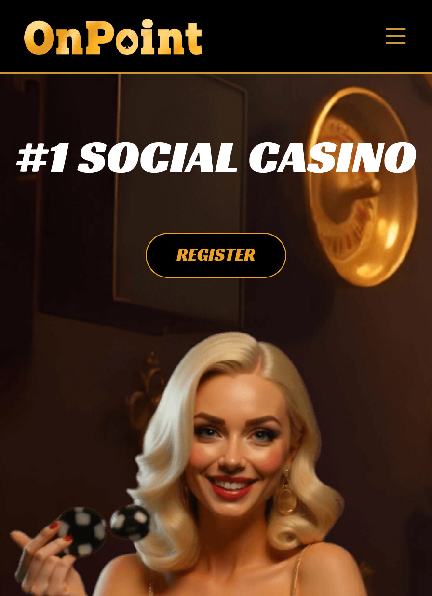
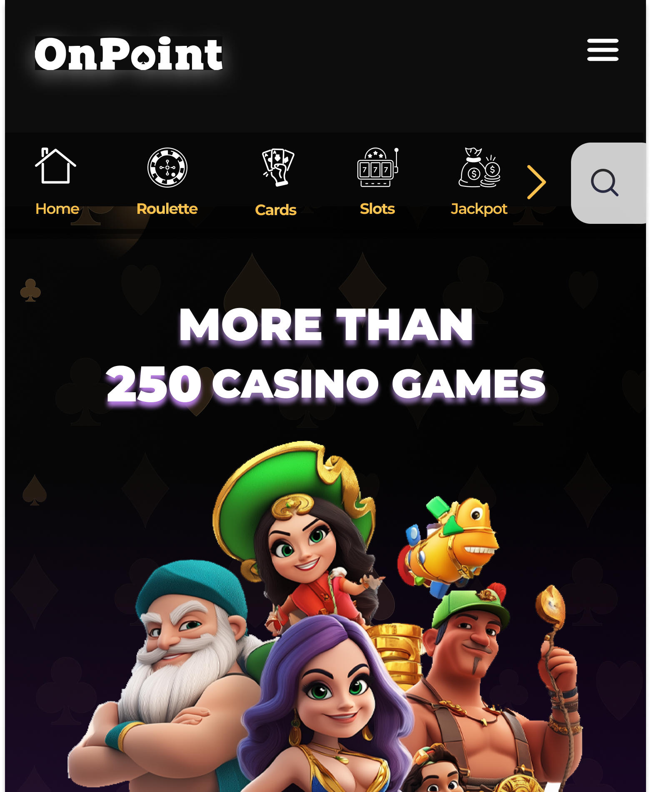
03 — Research Methods
Method 01
Competitive Analysis
Analyzed top social casinos including Chumba Casino for layout and reward patterns. Identified high-contrast CTAs and simplified navigation as common success traits. Benchmarked bonus placement and game discovery flows.
Method 02
Heuristic Evaluation
Evaluated the existing OnPoint interface against usability principles — clarity, consistency, feedback. Identified overloaded interfaces and inconsistent visual cues. Findings informed spacing, contrast, and navigation hierarchy decisions.
Method 03
User Observation
Observed peer testers navigating casino homepages and bonus flows. Identified first-click behavior — users go to bonuses before game browsing. Noted confusion when navigation competed with reward elements.
"Users gravitate toward bonus CTAs before exploring games. The navigation needs to get out of the way and let the reward lead."
04 — Concept Development
Two competing design directions tested different hypotheses. Same content architecture — opposite visual philosophies. Only one could win.
Brand A — Premium & Minimal
Brand B — Bold & Energetic ✦ Winner
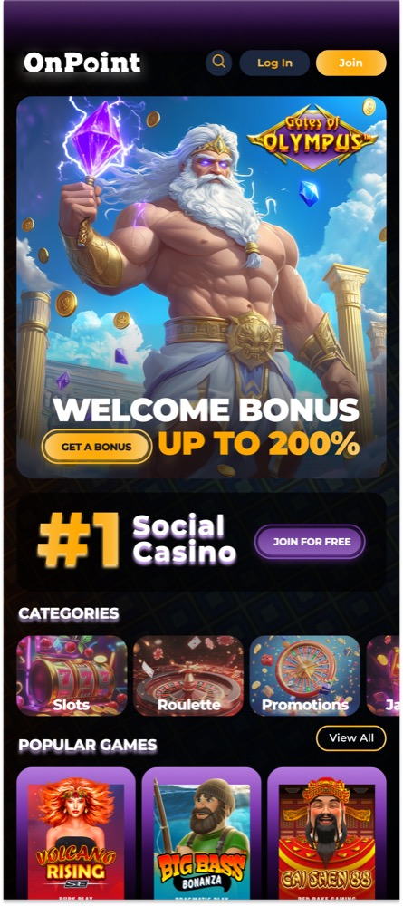
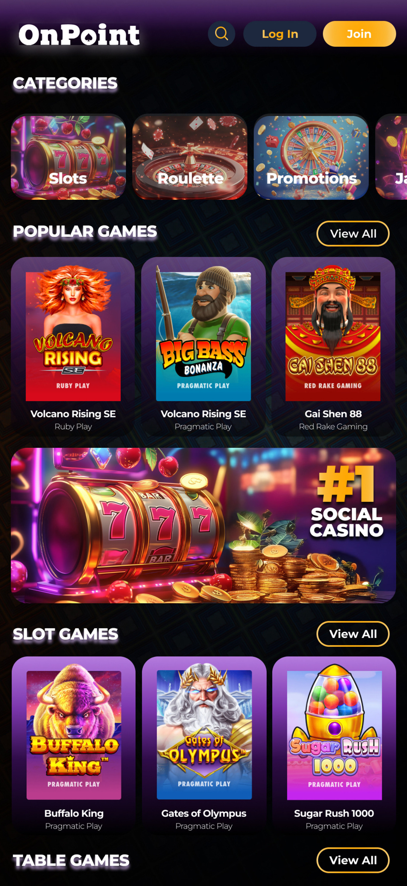
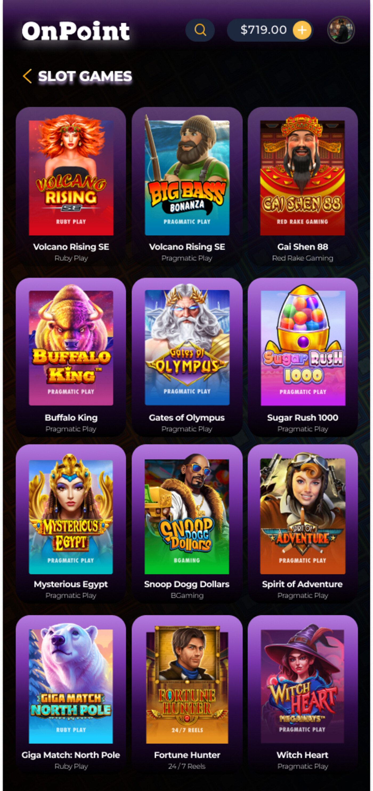
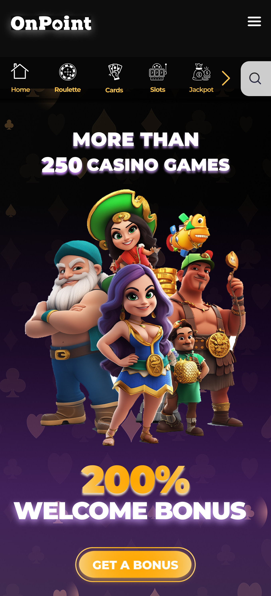
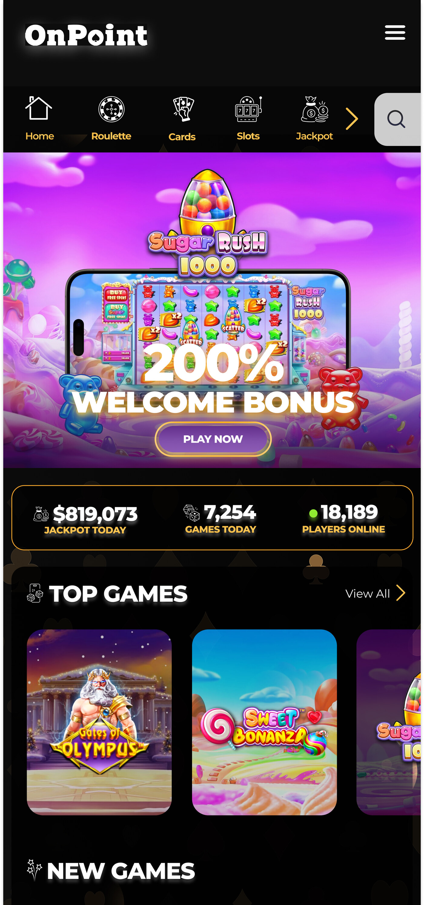
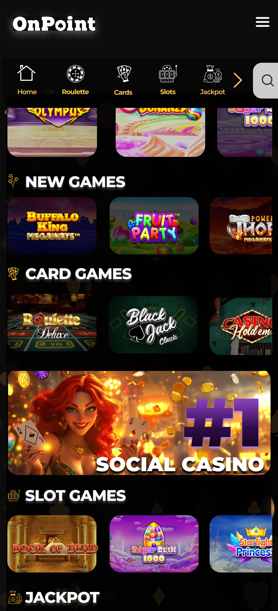
"Brand B won — 80% peer preference. The energy matched user expectations for a social casino while maintaining the structural clarity Brand A established through research."
05 — Final Design
Hero
200% Welcome Bonus
Full-width hero. Primary CTA immediately visible. No scrolling required to find the bonus offer.
Navigation
Simplified + Persistent
Clean top nav: Games, Social, Casino, Promos. Zero visual competition with reward elements.
Games
Clear Discovery
Top Games grid with category filters. New releases and popular titles surfaced by engagement.
Stats
Social Proof Bar
Live jackpot total, games today, players online — urgency and trust simultaneously.
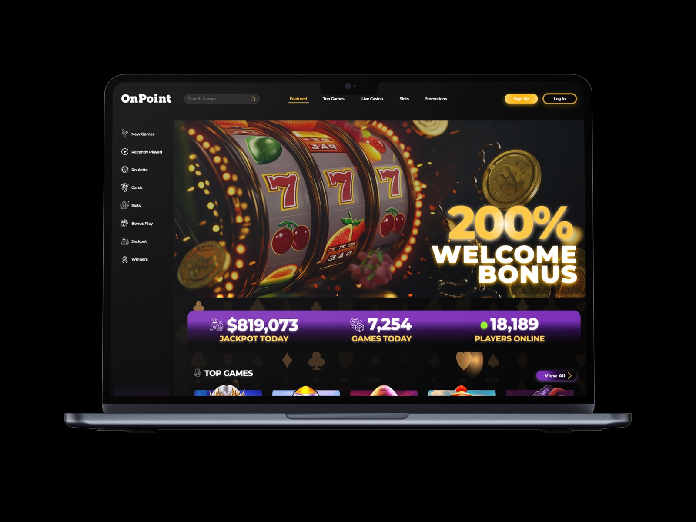
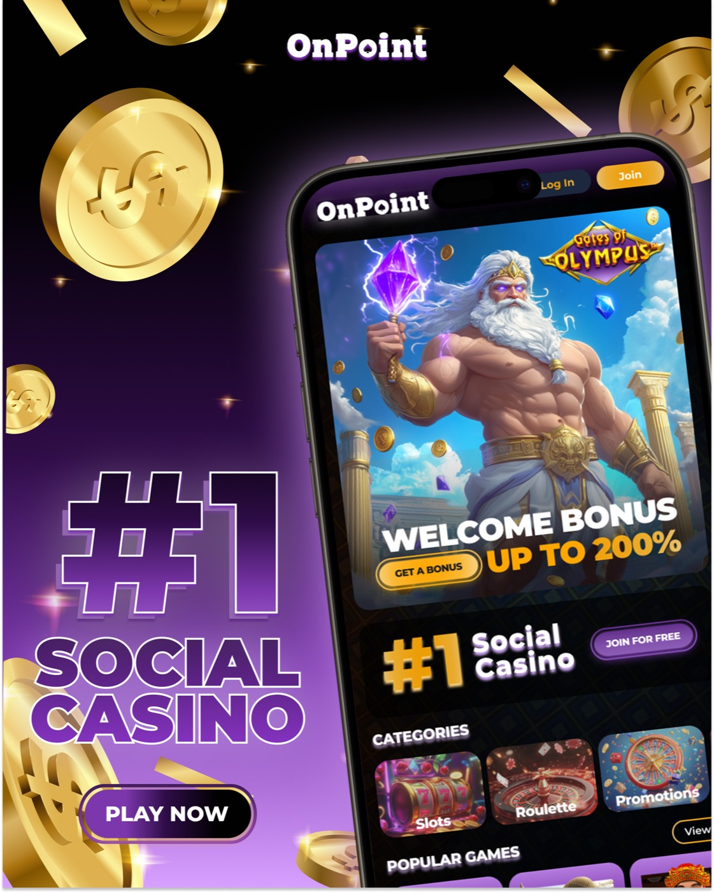
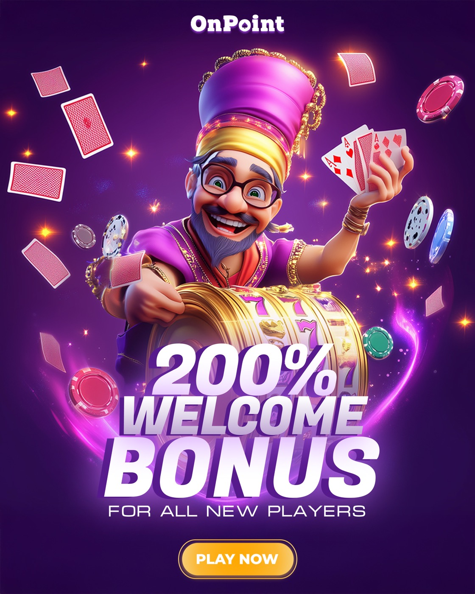
06 — Reflection